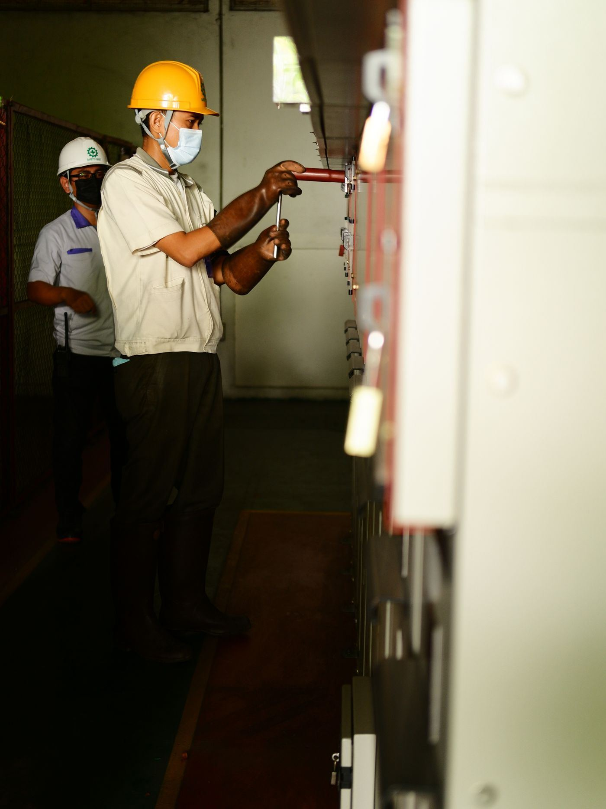

Faire fonctionner les installations, et les faire durer.
Maintenance industrielle, informatique industrielle et automatisme sur systèmes complexes : la discipline qui transforme un ouvrage livré en outil disponible sur le long terme.
Le vrai indicateur d'une installation industrielle n'est pas qu'elle démarre, mais qu'elle reste disponible quand on en a besoin.
Construire une installation est une chose ; la maintenir en état de produire en est une autre, souvent plus exigeante. La maintenance industrielle et l'automatisme sont, dans le parcours qui fonde l'agence, une compétence de premier métier, celle par laquelle tout a commencé : maintenance, électricité, électrotechnique.
Trois champs, une même finalité
Maintenance industrielle
Maintien en condition opérationnelle des équipements électriques et industriels. L'expérience conduite sur des sites sensibles (dessalement, production d'énergie, installations MT/BT) a montré une constante : une maintenance efficace se prépare à la conception, par le choix d'équipements dont les pièces restent disponibles et dont les organes sont accessibles.
Automatisme
Conception et intervention sur les systèmes automatisés qui pilotent les procédés : séquences de fonctionnement, régulation, sécurités, gestion des modes dégradés. Un automatisme bien conçu ne se remarque pas ; il tient l'installation dans son domaine de fonctionnement sans intervention humaine permanente.
Informatique industrielle & supervision
Remontée d'informations, supervision, aide à la conduite et à la décision. La supervision transforme des capteurs dispersés en une vision d'ensemble exploitable, à condition d'être pensée pour l'exploitant, pas pour l'intégrateur.

Notre principe : concevoir maintenable
La plupart des surcoûts de maintenance se décident au moment de la conception, quand personne ne pense encore à la maintenance. Nous inversons cet ordre. Dès l'étude, trois questions sont posées :
- Les pièces de rechange sont-elles disponibles sur le marché local ou régional, dans des délais compatibles avec l'exploitation ?
- Les organes sont-ils accessibles pour l'intervention, sans démontage disproportionné ni arrêt prolongé de l'installation ?
- L'équipe locale saura-t-elle intervenir une fois la garantie échue ? Si la réponse est non, la conception ou la formation doit être revue.
Un système complexe à fiabiliser ?
Diagnostic de disponibilité, plan de maintenance, reprise d'automatismes : parlons du réel.
En visio, au créneau qui vous convient : le rendez-vous s'inscrit directement dans l'agenda de Georges GANGBES.